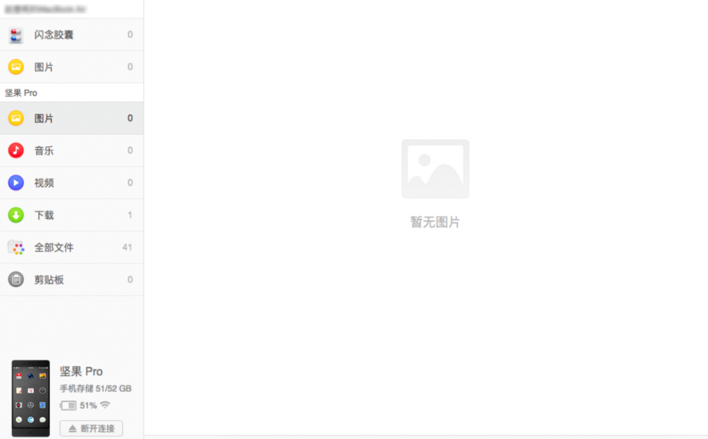
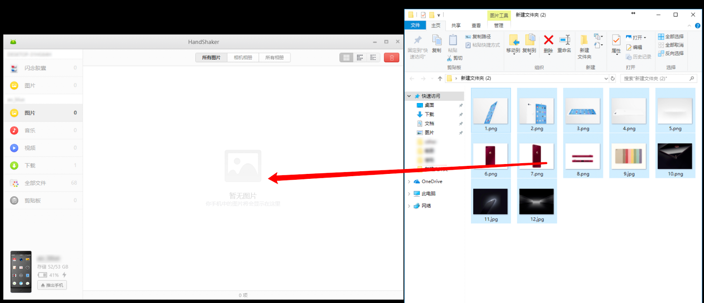

HandShaker 上手一周：锤子留下的这套跨端文件传输，现在用着还香吗？
拿到锤子坚果手机的老用户大多听过 HandShaker——电脑管理安卓手机文件的跨平台工具。时隔多年重新装起来，实际体验怎么样？
为什么我又装了 HandShaker
前阵子收拾旧物翻出一台压箱底的坚果 Pro 2，想把里面存的照片导出来。插上 USB 当 U 盘用倒是能读，但文件夹层级深、中文命名乱，找起来费劲。想起当年锤子科技有个跨端工具叫 HandShaker，就是干这个的——电脑上直接管理安卓手机文件，界面清爽，拖拽就行。
说实话我一开始没抱太高期望。毕竟这工具停更快八年了，官方最后一个版本还停在 2018 年。锤子都散了，它能正常跑起来吗？抱着试试看的心态去HandShaker官网找了安装包。
第一眼：居然真能装上
安装包从官方下载拿的，双击一路下一步就装完了。Windows 版装完在系统托盘多了个小图标，Mac 版则常驻菜单栏。点开主窗口，界面挺干净的——一个大扫描框，周围几个功能 tab，没有花里胡哨的东西。
手机端那边需要先在应用商店装 HandShaker Android 版，打开后让它保持前台。然后电脑端开始扫设备，手机弹出"信任"提示时点一下，十几秒就连上了。
连上的那一刻有点惊喜——主界面显示了手机型号、电量、内存剩余，和当年用的时候一模一样。我试着从电脑拖了一个 PDF 进手机的 Download 文件夹，进度条走完，手机里立刻能看到。又反过来从手机相册拖了几张照片到桌面，速度也不慢。

实际用下来：三个核心功能的真实感受
文件管理：最省心的还是这个
HandShaker 本质上就是个文件管理器，但它做得比 Windows 资源管理器或 Finder 舒服。左侧是手机的目录树，右侧是文件列表，顶部有搜索框。我要找坚果里那堆截图，输入 "screenshot" 一秒就筛出来了，不用在一堆 P0、P1、DCIM 之间瞎翻。
拖拽操作是最爽的——电脑和手机之间双向拖文件，单文件多文件都行，大文件还能看进度条。我把整个下载目录打包拖到手机，中间不小心点了取消，重新拖过去它也没报残留冲突。

剪贴板互通：轻量但够用
HandShaker 有个剪贴板互通功能，电脑端输入一段文字，点发送，手机那边剪贴板立刻就有了。我试了把一篇长文档摘要从电脑发到手机，手机上打开微信直接粘贴就发出去了，省了在手机上打那几百字。
但它和苹果的通用剪贴板不是一回事——得手动触发，不是自动同步，而且只支持纯文字，图片链接都不行。另外还有个小坑：同一个剪贴板通道是双向共用的，电脑发过去的文字，手机那边再复制新的就覆盖了。所以如果你正在电脑端发着文字，手机上别随便复制东西。
三种连接方式，首推 USB
HandShaker 支持 USB、Wi-Fi、扫码三种配对。Wi-Fi 要在同一局域网，扫码得手机对着电脑屏幕。但实测下来还是 USB 最稳——插上就认，速度也快，而且不受网络波动影响。如果数据线只能充电不能传数据，会直接扫描不到设备，这时候换根线就行，不是软件问题。
几个不太爽的地方
首先是支持范围太窄了。HandShaker 的手机端只支持 Smartisan/坚果品牌的 Android，其他安卓品牌装不了。这点挺遗憾的，本来是个好工具，却被硬件生态卡死了。
其次是停更太久。从 2018 年 v2.5.6 之后就没动过，所以不支持最新的 Android 版本特性，也没有适配高 DPI 屏幕。不过基本功能不受影响，能用就是能用，想折腾的话可以去HandShaker文档翻点隐藏设置。
还有一点，Wi-Fi 方式偶尔会断连。我把电脑从有线切到 Wi-Fi 再切回来，HandShaker 的连接就掉了，得重新配对。USB 方式没这问题，所以日常用还是插线靠谱。
适合谁，不适合谁
如果你手里有一台坚果手机，又想在电脑上方便地管理文件——HandShaker 到今天还是首选。界面清爽、操作直观、没有广告，装完即用。
但如果你用的是小米、华为、OPPO 这些其他品牌，HandShaker 帮不上忙，得找各自的官方助手或者用 AirDroid 之类的通用工具。另外如果你需要跨平台同步剪贴板里的图片，HandShaker 的纯文字通道也满足不了。
我这几天用下来，主要就是把坚果里的照片、文档导到电脑，再偶尔发点文字到手机剪贴板。就这两个场景，HandShaker 完全够用，而且比用数据线当 U 盘拖要省心多了。锤子当年做产品确实有一套，停更这么多年还能保持可用，也算难得了。